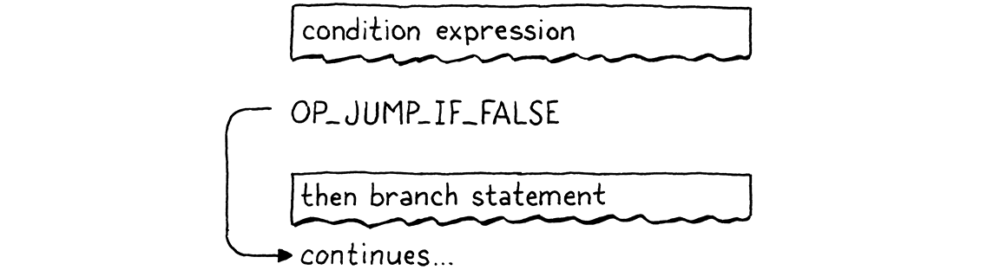
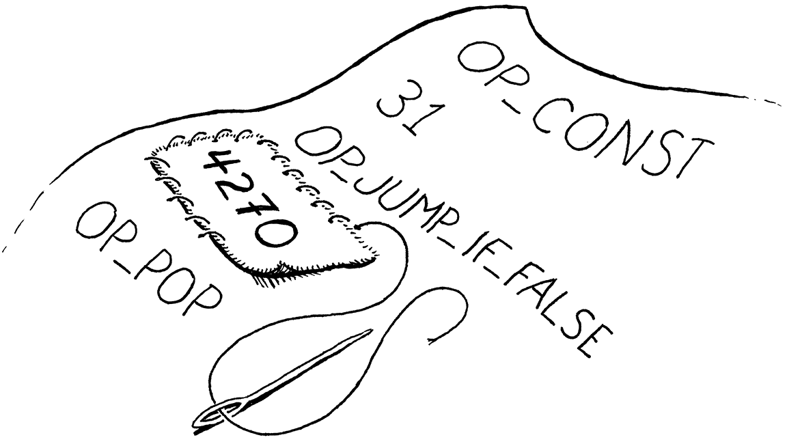
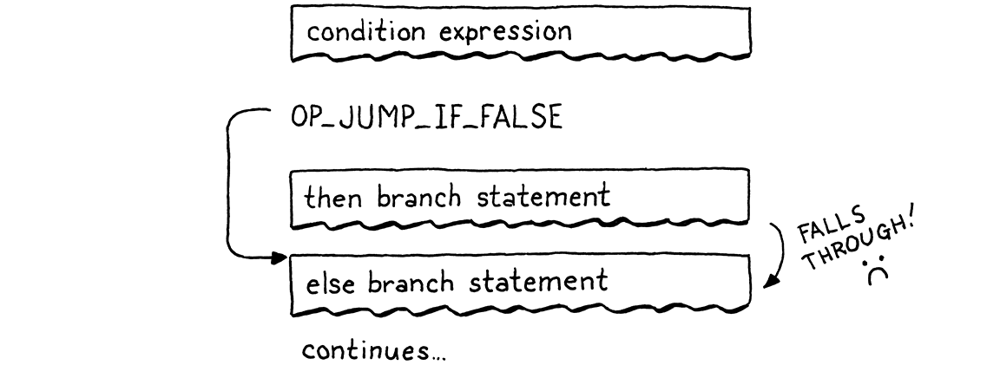
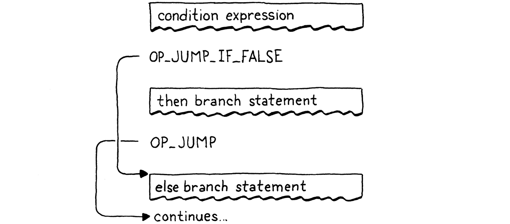
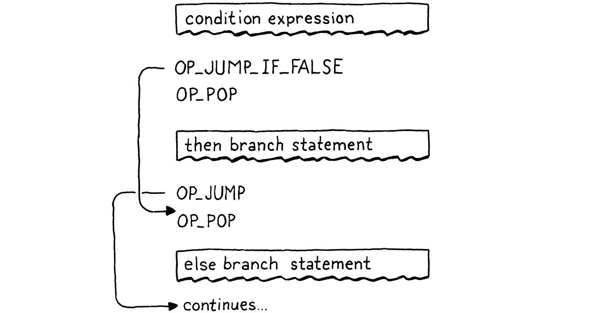
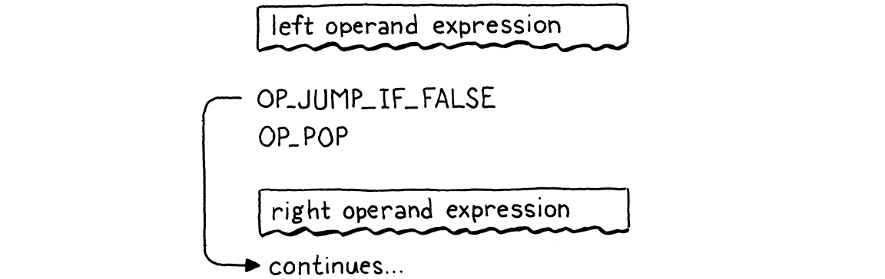
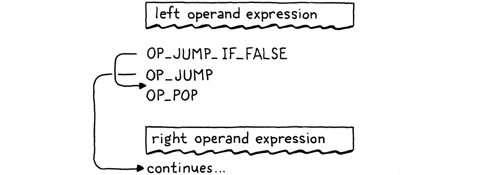
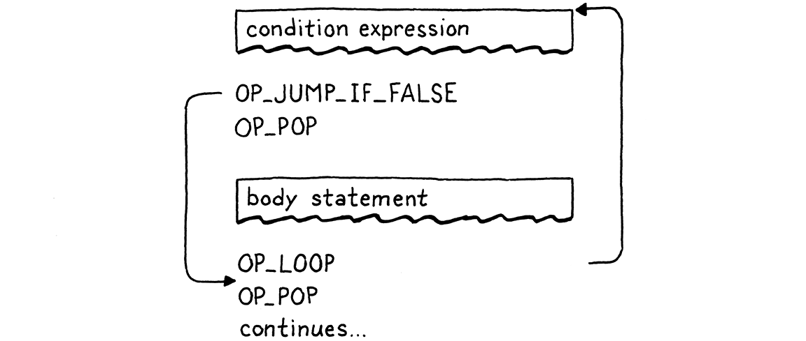
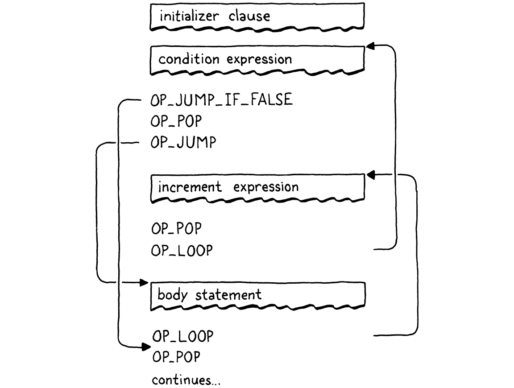

来回跳转
我们头脑中想象的秩序像一张网，或者一架梯子，造出来是为了抵达某样东西。 但之后你必须把梯子扔掉，因为你会发现，它即便有用，也是没有意义的。
翁贝托·埃科，《玫瑰的名字》
走到这一步花了不少时间，但我们终于准备好给虚拟机加上控制流了。在我们为 jlox 写的树遍历解释器里，我们是用 Java 的控制流来实现 Lox 的控制流的。为了执行一条 Lox 的 if 语句，我们用一条 Java 的 if 语句去运行选中的分支。这样是能跑，但不完全让人满意。JVM 本身或者原生 CPU 究竟是用什么魔法实现 if 语句的？既然我们已经有了可以随意折腾的自制字节码 VM，我们就能回答这个问题了。
当我们谈论「控制流」时，指的是什么？这里的「流」指的是执行在程序文本中移动的方式。几乎就像计算机内部有一个小机器人在我们的代码里游荡，这边执行一点、那边执行一点。流就是那个机器人走过的路径，而通过控制这个机器人，我们就决定了它执行哪些代码片段。
在 jlox 中，机器人此刻盯着哪段代码——也就是当前那段代码——是隐式的，取决于哪些 AST 节点被存放在各个 Java 变量里，以及我们当时正执行到哪一段 Java 代码。在 clox 中，它要明确得多。VM 的 ip 字段存放着当前字节码指令的地址。这个字段的值精确地表示了「我们在程序的哪里」。
执行通常靠递增 ip 前进。但我们可以随意修改这个变量。要实现控制流，只需要以更有意思的方式改变 ip 就行了。最简单的控制流结构就是一条没有 else 分支的 if 语句：
if (condition) print("condition was truthy");
VM 先对条件表达式求值。如果结果为真值，它就继续往下，执行语句体里的 print 语句。有意思的情况是条件为假值的时候。那时，执行会跳过整个 then 分支，进入下一条语句。
要跳过一整段代码，我们只需把 ip 字段设置成那段代码之后那条字节码指令的地址。要有条件地跳过某段代码，我们就需要一条查看栈顶值的指令。如果它是假值，这条指令就给 ip 加上一个给定的偏移量，从而跳过一段指令；否则它什么都不做，让执行照常进入下一条指令。
当我们编译成字节码时，代码里显式的嵌套块结构会蒸发掉，只留下一串扁平的指令。Lox 是一门结构化程序设计语言，但 clox 的字节码不是。「正确」——或者取决于你怎么看，「错误」——的一组字节码指令，完全可以跳进某个块的中间，或者从一个作用域跳到另一个作用域。
VM 会老老实实地执行这样的字节码，哪怕结果会让栈处于某种未知而不一致的状态。所以，尽管字节码是非结构化的，我们仍会小心确保编译器只生成干净的代码，保持与 Lox 本身相同的结构与嵌套。
真实的 CPU 正是这样表现的。即便我们可能用高级语言来给它们编程，而这些语言强制要求结构化的控制流，编译器也会把它降级成原始的跳转。扒到最底层，事实证明 goto 是唯一真正的控制流。
总之，我本来没打算扯这么哲学。重要的一点是：只要我们有了那一条条件跳转指令，就足以实现 Lox 的 if 语句了——前提是它没有 else 分支。那我们就开始动手吧。
23 . 1If 语句
都这么多章了，流程你也熟悉了。任何新特性都从前端开始，然后一路走完整条流水线。if 语句毕竟是一条语句，所以我们把它接到解析器上。
if (match(TOKEN_PRINT)) {
printStatement();
在 statement() 内
} else if (match(TOKEN_IF)) { ifStatement();
} else if (match(TOKEN_LEFT_BRACE)) {
看到 if 关键字时，我们把编译工作交给这个函数：
加在 expressionStatement() 之后
static void ifStatement() { consume(TOKEN_LEFT_PAREN, "Expect '(' after 'if'."); expression(); consume(TOKEN_RIGHT_PAREN, "Expect ')' after condition."); int thenJump = emitJump(OP_JUMP_IF_FALSE); statement(); patchJump(thenJump); }
首先我们编译条件表达式，它被一对圆括号括起来。运行时，这会在栈顶留下条件值的拷贝。我们将用它来决定是执行 then 分支还是跳过它。
接着我们发射一条新的 OP_JUMP_IF_FALSE 指令。它带一个操作数，表示要给 ip 加多少偏移——也就是要跳过多少字节的代码。如果条件是假值，它就按这个量调整 ip。大概像这样：

但我们遇到了一个问题。在写 OP_JUMP_IF_FALSE 指令的操作数时，我们怎么知道要跳多远？then 分支还没编译，所以我们不知道它包含多少字节码。
解决办法是一个经典技巧，叫作回填（backpatching）。我们先发射这条跳转指令，操作数用一个占位值。然后记下这条半成品指令的位置。接着编译 then 语句体。编译完后，我们就知道要跳多远了。于是我们回过头，把那个占位操作数替换成现在能算出来的真实值。有点像在已经编好的布料上缝一块补丁。

我们把这个技巧编码成两个辅助函数。
加在 emitBytes() 之后
static int emitJump(uint8_t instruction) { emitByte(instruction); emitByte(0xff); emitByte(0xff); return currentChunk()->count - 2; }
第一个函数发射一条字节码指令，并为跳转偏移写下一个占位操作数。我们把操作码作为参数传进来，因为稍后会有两条不同的指令用到这个辅助函数。跳转偏移操作数我们用两个字节。16 位的 偏移 让我们能跳过最多 65,535 字节的代码，对我们的需求来说应该绰绰有余。
这个函数返回所发射指令在代码块中的偏移。编译完 then 分支后，我们把这个偏移传给这个函数：
加在 emitConstant() 之后
static void patchJump(int offset) { // 减去 2，是为了把跳转偏移量自身的字节码也算进去。 int jump = currentChunk()->count - offset - 2; if (jump > UINT16_MAX) { error("Too much code to jump over."); } currentChunk()->code[offset] = (jump >> 8) & 0xff; currentChunk()->code[offset + 1] = jump & 0xff; }
它回到字节码里，把给定位置上的操作数替换成算出来的跳转偏移。我们在发射下一条希望跳转落到的指令之前调用 patchJump()，这样它就用当前的字节码数量来决定要跳多远。在 if 语句的情形下，也就是说：在编译完 then 分支之后、编译下一条语句之前。
编译期需要的东西就这些。来定义这条新指令。
OP_PRINT,
在枚举 OpCode 内
OP_JUMP_IF_FALSE,
OP_RETURN,
在 VM 那一边，我们这样让它工作起来：
break;
}
在 run() 内
case OP_JUMP_IF_FALSE: { uint16_t offset = READ_SHORT(); if (isFalsey(peek(0))) vm.ip += offset; break; }
case OP_RETURN: {
这是我们添加的第一条带 16 位操作数的指令。为了从代码块中读出它，我们用一个新宏。
#define READ_CONSTANT() (vm.chunk->constants.values[READ_BYTE()])
在 run() 内
#define READ_SHORT() \ (vm.ip += 2, (uint16_t)((vm.ip[-2] << 8) | vm.ip[-1]))
#define READ_STRING() AS_STRING(READ_CONSTANT())
它从代码块里拽出接下来的两个字节，用它们拼出一个 16 位无符号整数。一如既往，用完之后我们把这个宏清理掉。
#undef READ_BYTE
在 run() 内
#undef READ_SHORT
#undef READ_CONSTANT
读出偏移后，我们检查栈顶的条件值。如果它是假值，我们就把这段跳转偏移加到 ip 上。否则我们不管 ip，执行会自动进入跳转指令之后的下一条指令。
在条件为假值的情况下，我们不需要做别的工作。我们已经调整了 ip，所以当外层的指令分派循环再次转起来时，它会从那条新指令继续执行，跳过 then 分支里的全部代码。
注意这条跳转指令并没有把条件值从栈上弹出来。所以我们还没完全做完，因为这会在栈上留下一个多余的游离值。我们很快会收拾干净。先不管它，我们现在已经有了一条可用的 if 语句，在 VM 里只需一条小指令来支持它。
23 . 1 . 1Else 分支
一个不支持 else 子句的 if 语句，就像《亚当斯一家》里没了戈麦斯的莫蒂西亚（二人是《亚当斯一家》中的夫妻）。所以，编译完 then 分支后，我们就去找 else 关键字；一旦找到，就编译 else 分支。
patchJump(thenJump);
在 ifStatement() 内
if (match(TOKEN_ELSE)) statement();
}
条件为假值时，我们会跳过 then 分支。如果有 else 分支，ip 就会正好落在它代码的开头。但这还不够，照这样会得到下面这种流程：

条件为真值时，我们像期望的那样执行 then 分支。但执行完之后，执行会一路滚进 else 分支。糟糕！条件为真时，跑完 then 分支后我们需要跳过 else 分支。这样无论哪种情况，我们都只执行一个分支，像这样：

要实现这个，我们需要在 then 分支末尾再加一次跳转。
statement();
在 ifStatement() 内
int elseJump = emitJump(OP_JUMP);
patchJump(thenJump);
我们在 else 语句体结束后回填那个偏移。
if (match(TOKEN_ELSE)) statement();
在 ifStatement() 内
patchJump(elseJump);
}
执行完 then 分支后，它跳到 else 分支之后的下一条语句。和另一处跳转不同，这次跳转是无条件的。我们总会走它，所以需要另一条指令来表达这件事。
OP_PRINT,
在枚举 OpCode 内
OP_JUMP,
OP_JUMP_IF_FALSE,
我们这样解释它：
break;
}
在 run() 内
case OP_JUMP: { uint16_t offset = READ_SHORT(); vm.ip += offset; break; }
case OP_JUMP_IF_FALSE: {
这里没什么太出人意料的——唯一的区别是它不检查条件，总是加上那个偏移。
现在 then 和 else 分支都能工作了，我们就快完成了。最后一件事是清理掉我们留在栈上的那个条件值。记住，每条语句都必须有零栈效应——语句执行完毕后，栈的高度应当和之前一样。
我们本可以让 OP_JUMP_IF_FALSE 指令自己把条件弹出来，但很快我们就要把这条指令用在逻辑运算符上，而那时我们不希望条件被弹出。所以我们改让编译器在编译 if 语句时发射几条显式的 OP_POP 指令。我们必须确保生成代码里的每一条执行路径都会弹出这个条件。
条件为真值时，我们在 then 分支内部的代码之前把它弹出来。
int thenJump = emitJump(OP_JUMP_IF_FALSE);
在 ifStatement() 内
emitByte(OP_POP);
statement();
否则，我们在 else 分支开头把它弹出来。
patchJump(thenJump);
在 ifStatement() 内
emitByte(OP_POP);
if (match(TOKEN_ELSE)) statement();
这条小指令还意味着，即使用户没写 else 分支，每条 if 语句也有一个隐式的 else 分支。用户省略它的情形下，这个分支所做的全部工作就是丢弃条件值。
完整正确的流程长这样：

顺着流程走一遍就能看到，它总是只执行一个分支，并确保条件先被弹出。剩下的只是一点点反汇编器的支持。
return simpleInstruction("OP_PRINT", offset);
在 disassembleInstruction() 内
case OP_JUMP: return jumpInstruction("OP_JUMP", 1, chunk, offset); case OP_JUMP_IF_FALSE: return jumpInstruction("OP_JUMP_IF_FALSE", 1, chunk, offset);
case OP_RETURN:
这两条指令有一种新的、带 16 位操作数的格式，所以我们加一个新的工具函数来反汇编它们。
加在 byteInstruction() 之后
static int jumpInstruction(const char* name, int sign, Chunk* chunk, int offset) { uint16_t jump = (uint16_t)(chunk->code[offset + 1] << 8); jump |= chunk->code[offset + 2]; printf("%-16s %4d -> %d\n", name, offset, offset + 3 + sign * jump); return offset + 3; }
好了，这就是一条完整的控制流结构。如果这是部 80 年代的电影，这时该响起蒙太奇配乐，其余的控制流语法自会水到渠成。可惜 80 年代早就过去了，我们只能自己一寸一寸地磨。
23 . 2逻辑运算符
你在 jlox 里大概已经见过，但逻辑运算符 and 和 or 并不只是又一对比 + 和 - 之类的二元运算符。因为它们会短路，可能根据左操作数的值而不对右操作数求值，所以它们更像控制流表达式。
它们基本上就是带 else 分支的 if 语句的一个小变体。解释它们最简单的方式，就是直接把编译器代码和它生成的字节码控制流摆出来。先从 and 开始，我们把它挂到表达式解析表里：
[TOKEN_NUMBER] = {number, NULL, PREC_NONE},
替换 1 行
[TOKEN_AND] = {NULL, and_, PREC_AND},
[TOKEN_CLASS] = {NULL, NULL, PREC_NONE},
这会交给一个新的解析函数。
加在 defineVariable() 之后
static void and_(bool canAssign) { int endJump = emitJump(OP_JUMP_IF_FALSE); emitByte(OP_POP); parsePrecedence(PREC_AND); patchJump(endJump); }
调用到这里时，左侧表达式已经编译完了。也就是说运行时，它的值会在栈顶。如果那个值是假值，我们就知道整个 and 必然为假，于是跳过右操作数，把左侧的值留作整个表达式的结果。否则，我们丢弃左侧的值，求值右操作数，它成为整个 and 表达式的结果。
就是那里那四行代码，产生的正是这个效果。流程长这样：

现在你就能看出 OP_JUMP_IF_FALSE 为什么要把值留在栈上了。当 and 的左侧是假值时，那个值会留下来，成为整个表达式的结果。
23 . 2 . 1逻辑 or 运算符
or 运算符稍微复杂一点。先把它加到解析表里。
[TOKEN_NIL] = {literal, NULL, PREC_NONE},
替换 1 行
[TOKEN_OR] = {NULL, or_, PREC_OR},
[TOKEN_PRINT] = {NULL, NULL, PREC_NONE},
当那个解析器吃掉一个中缀 or 词法单元时，它会调用这个：
加在 number() 之后
static void or_(bool canAssign) { int elseJump = emitJump(OP_JUMP_IF_FALSE); int endJump = emitJump(OP_JUMP); patchJump(elseJump); emitByte(OP_POP); parsePrecedence(PREC_OR); patchJump(endJump); }
在 or 表达式里，如果左侧是真值，我们就跳过右操作数。于是我们需要在值为真值时跳转。我们本可以新增一条指令，但为了展示我们的编译器可以随意把语言的语义映射到任何想要的指令序列，我用已有的跳转指令把它实现了出来。
左侧为假值时，它做一次很小的跳转，越过下一条语句。那条语句是一个无条件跳转，越过右操作数的代码。这套小舞蹈实际上就在值为真值时跳转。流程长这样：

老实跟你说，这不是最好的做法。要分派的指令更多，开销也更大。or 没有理由比 and 慢。但能看见不新增任何指令就实现这两个运算符，还是挺有意思的。请原谅我的这些小乐趣。
好了，Lox 里那三个分支结构就是这个意思——我的意思是，这些是只会向前跳过代码的控制流特性。其他语言通常还有某种多路分支语句，比如 switch，也许还有像 ?: 这样的条件表达式，但 Lox 保持简单。
23 . 3While 语句
接下来是循环语句，它们向后跳，好让代码能被执行多次。Lox 只有两种循环结构，while 和 for。while 循环要简单（多）得多，所以我们从那里开始狂欢。
ifStatement();
在 statement() 内
} else if (match(TOKEN_WHILE)) { whileStatement();
} else if (match(TOKEN_LEFT_BRACE)) {
遇到 while 词法单元时，我们调用：
加在 printStatement() 之后
static void whileStatement() { consume(TOKEN_LEFT_PAREN, "Expect '(' after 'while'."); expression(); consume(TOKEN_RIGHT_PAREN, "Expect ')' after condition."); int exitJump = emitJump(OP_JUMP_IF_FALSE); emitByte(OP_POP); statement(); patchJump(exitJump); emitByte(OP_POP); }
大部分内容和 if 语句类似——我们编译条件表达式，外面套上必需的圆括号。紧接着是一条跳转指令，条件为假值时就跳过后面的语句体。
我们在编译完语句体后回填这次跳转，并且小心地在两条路径上都把条件值从栈上弹出。和 if 语句唯一的区别就是循环。看起来像这样：
statement();
在 whileStatement() 内
emitLoop(loopStart);
patchJump(exitJump);
编译完语句体后，我们调用这个函数来发射一条「循环」指令。那条指令需要知道要往回跳多远。向前跳时，我们必须分两个阶段来发射指令，因为在发出跳转指令之前，我们还不知道要跳多远。现在没有这个问题了。我们已经编译好了想跳回去的那个代码位置——就在条件表达式之前。
我们要做的只是在编译到那里时把那个位置记下来。
static void whileStatement() {
在 whileStatement() 内
int loopStart = currentChunk()->count;
consume(TOKEN_LEFT_PAREN, "Expect '(' after 'while'.");
执行完 while 循环的语句体后，我们一路跳回条件之前。这样每一轮迭代都会重新求值条件表达式。我们把代码块当前的指令数量存进 loopStart，记录下我们即将编译的条件表达式之前那个字节码偏移。然后把它传给这个辅助函数：
加在 emitBytes() 之后
static void emitLoop(int loopStart) { emitByte(OP_LOOP); int offset = currentChunk()->count - loopStart + 2; if (offset > UINT16_MAX) error("Loop body too large."); emitByte((offset >> 8) & 0xff); emitByte(offset & 0xff); }
它有点像 emitJump() 和 patchJump() 合在一起。它发射一条新的循环指令，无条件地按给定的偏移向后跳。和跳转指令一样，后面跟着一个 16 位操作数。我们从当前所在指令算出到 loopStart（我们想跳回的位置）的偏移。那个 + 2 是要把 OP_LOOP 指令自身的操作数大小也算进去，因为它们同样要被跳过。
从 VM 的角度看，OP_LOOP 和 OP_JUMP 真的没有任何语义区别。两者都只是给 ip 加个偏移。我们本可以用同一条指令，给它一个带符号的偏移操作数。但我图省事，不想跟那个麻烦的位操作纠缠——手动把一个 16 位有符号整数塞进两个字节里——而且我们还有操作码空间可用，何乐而不为？
新指令在这里：
OP_JUMP_IF_FALSE,
在枚举 OpCode 内
OP_LOOP,
OP_RETURN,
在 VM 里，我们这样实现它：
}
在 run() 内
case OP_LOOP: { uint16_t offset = READ_SHORT(); vm.ip -= offset; break; }
case OP_RETURN: {
和 OP_JUMP 唯一的区别是减法而不是加法。反汇编也差不多。
return jumpInstruction("OP_JUMP_IF_FALSE", 1, chunk, offset);
在 disassembleInstruction() 内
case OP_LOOP: return jumpInstruction("OP_LOOP", -1, chunk, offset);
case OP_RETURN:
这就是我们的 while 语句。它包含两次跳转——一次条件性的向前跳转，在条件不满足时逃出循环；一次在执行完语句体后的无条件向后循环跳转。流程长这样：

23 . 4For 语句
Lox 里另一个循环语句是从 C 继承来的老资格的 for 循环。和 while 循环相比，它身上的花样多得多。它有三个子句，全都是可选的：
-
初始化子句可以是一条变量声明，也可以是一个表达式。它在语句开头执行一次。
-
条件子句是一个表达式。和
while循环一样，求值结果为假值时我们退出循环。 -
增量表达式在每轮循环迭代的末尾执行一次。
在 jlox 里，解析器会把 for 循环脱糖成一棵合成的 AST：一个 while 循环，前面和语句体末尾各加些东西。我们要做的类似，不过不会经过 AST。相反，我们的字节码编译器会直接用已有的跳转和循环指令。
我们一块一块地把实现搭起来，先从 for 关键字开始。
printStatement();
在 statement() 内
} else if (match(TOKEN_FOR)) { forStatement();
} else if (match(TOKEN_IF)) {
它调用一个辅助函数。如果我们只支持像 for (;;) 这样子句全空的 for 循环，就可以这样实现：
加在 expressionStatement() 之后
static void forStatement() { consume(TOKEN_LEFT_PAREN, "Expect '(' after 'for'."); consume(TOKEN_SEMICOLON, "Expect ';'."); int loopStart = currentChunk()->count; consume(TOKEN_SEMICOLON, "Expect ';'."); consume(TOKEN_RIGHT_PAREN, "Expect ')' after for clauses."); statement(); emitLoop(loopStart); }
顶部有一堆必需的标点。然后我们编译语句体。和 while 循环一样，我们记录语句体开头的字节码偏移，并在语句体之后发射一条循环指令跳回那个位置。现在我们已经有一个可用的无限循环实现了。
23 . 4 . 1初始化子句
现在我们加上第一个子句，初始化子句。它只在语句体之前执行一次，所以编译起来很直接。
consume(TOKEN_LEFT_PAREN, "Expect '(' after 'for'.");
在 forStatement() 内
替换 1 行
if (match(TOKEN_SEMICOLON)) { // 没有初始值。 } else if (match(TOKEN_VAR)) { varDeclaration(); } else { expressionStatement(); }
int loopStart = currentChunk()->count;
语法有点复杂，因为我们允许要么是变量声明，要么是表达式。我们靠 var 关键字是否存在来区分。表达式的情况下，我们调用 expressionStatement() 而不是 expression()。它会去找一个分号，这里我们也需要；它还会发射一条 OP_POP 指令来丢弃那个值。我们不希望初始化子句在栈上留下任何东西。
如果一条 for 语句声明了变量，那个变量应当作用域限于循环体。我们通过把整条语句包进一个作用域来保证这一点。
static void forStatement() {
在 forStatement() 内
beginScope();
consume(TOKEN_LEFT_PAREN, "Expect '(' after 'for'.");
然后在末尾把它关上。
emitLoop(loopStart);
在 forStatement() 内
endScope();
}
23 . 4 . 2条件子句
接下来是可用于退出循环的条件表达式。
int loopStart = currentChunk()->count;
在 forStatement() 内
替换 1 行
int exitJump = -1; if (!match(TOKEN_SEMICOLON)) { expression(); consume(TOKEN_SEMICOLON, "Expect ';' after loop condition."); // 条件为假就跳出循环。 exitJump = emitJump(OP_JUMP_IF_FALSE); emitByte(OP_POP); // 条件。 }
consume(TOKEN_RIGHT_PAREN, "Expect ')' after for clauses.");
由于这个子句是可选的，我们需要看它到底在不在。如果省略了，下一个词法单元必须是分号，所以我们就找分号来判断。如果没有分号，那就一定有条件表达式。
那种情况下，我们编译它。然后，和 while 一样，我们发射一条条件跳转，条件为假值时退出循环。由于这条跳转会把值留在栈上，我们在执行语句体之前把它弹出来。这样就保证条件为真时那个值会被丢弃。
循环体之后，我们需要回填那次跳转。
emitLoop(loopStart);
在 forStatement() 内
if (exitJump != -1) { patchJump(exitJump); emitByte(OP_POP); // 条件。 }
endScope(); }
我们只在有条件子句时才这么做。如果没有，就没有跳转需要回填，也没有条件值需要弹出。
23 . 4 . 3增量子句
我把最好的留到了最后，增量子句。它相当复杂。它在文本上出现在语句体之前，却在语句体之后执行。如果我们先解析成 AST、再在单独一趟里生成代码，就可以直接先遍历进入并编译 for 语句 AST 的 body 字段，再编译它的增量子句。
遗憾的是，我们没法事后才编译增量子句，因为我们的编译器只对代码做一趟。于是我们要跳过增量、执行语句体、再向后跳回增量、执行它，然后进入下一轮迭代。
我知道，这有点怪，但总比在 C 里手动管理内存中的 AST 强，对吧？代码如下：
}
在 forStatement() 内
替换 1 行
if (!match(TOKEN_RIGHT_PAREN)) { int bodyJump = emitJump(OP_JUMP); int incrementStart = currentChunk()->count; expression(); emitByte(OP_POP); consume(TOKEN_RIGHT_PAREN, "Expect ')' after for clauses."); emitLoop(loopStart); loopStart = incrementStart; patchJump(bodyJump); }
statement();
它同样是可选的。由于这是最后一个子句，省略它时下一个词法单元会是右括号。当增量存在时，我们现在就得编译它，但它还不该执行。所以首先我们发射一条无条件跳转，越过增量子句的代码，直达循环体。
接下来我们编译增量表达式本身。这通常是一次赋值。不管是什么，我们执行它只是为了它的副作用，所以还要发射一条 pop 来丢弃它的值。
最后一部分有点棘手。首先我们发射一条循环指令。这是主循环，把我们带回 for 循环顶部——如果条件表达式存在的话，就在前面的条件表达式之前。那条循环紧跟在增量之后，因为增量在每轮迭代的末尾执行。
然后我们把 loopStart 改成指向增量表达式开始处的偏移。稍后，当我们在语句体之后发射那条循环指令时，这会让它向上跳到增量表达式，而不是像没有增量时那样跳到循环顶部。这就是我们把增量编织进、在语句体之后执行的办法。
过程盘根错节，但最终一切都能对上。一条带齐所有子句的完整循环，编译出的流程长这样：

和在 jlox 里实现 for 循环时一样，我们不需要改动运行时。一切都被编译成 VM 已经支持的基本控制流操作。在这一章里，我们向前大大跃进了一步——clox 现在是图灵完备的了。我们还覆盖了不少新语法：三条语句、两种表达式形式。即便如此，也只用了三条简单的新指令。对我们这套 VM 架构来说，这个投入产出比相当不错。
习题
-
除了
if语句，大多数 C 系语言还有多路的switch语句。给 clox 加一个。 文法是：switchStmt → "switch" "(" expression ")" "{" switchCase* defaultCase? "}" ; switchCase → "case" expression ":" statement* ; defaultCase → "default" ":" statement* ;
要执行一条
switch语句，先对括号里的 switch 值表达式求值。然后逐个遍历各个 case。对每个 case，求值它的值表达式。如果 case 的值等于 switch 的值，就执行 该 case 下面的语句，然后退出switch语句。否则试下一个 case。如果没有任何 case 匹配上、并且有default子句，就执行它的语句。为了让事情更简单，我们省掉 fallthrough 和
break语句。每个 case 的语句执行 完后会自动跳到 switch 语句的末尾。 -
在 jlox 里，我们有一个挑战是给
break语句加上支持。这次我们来做continue：continueStmt → "continue" ";" ;
continue语句直接跳到最近一层外围循环的顶部，跳过循环体的剩余部分。在for循环里，continue会跳到增量子句（如果有的话）。continue语句不在任何循环 里，是编译期错误。记得想想作用域。当
continue执行时，循环体内声明的局部变量、或嵌套在循环里 的块内声明的局部变量，该怎么办？ -
自 Algol 68 以来，控制流结构基本没怎么变。这之后的语言演进都集中在让代码更 声明式、更高层，所以命令式控制流没受到多少关注。
玩得开心的话，试着为 Lox 发明一个有用的新控制流特性。可以是现有形式的细化， 也可以是完全新东西。实际操作中，在这个低表达力层面想出一个足够有用、足以抵上 「迫使用户学习一套陌生命记法和行为」之成本的东西，是很难的，但这是锻炼你设计 能力的好机会。
设计说明：重谈 goto 有害论
发现我们在 Lox 里那些漂亮无比的结构化控制流，实际上全被编译成了原始的非结构化跳转，这种感觉就像《史酷比》里怪物一把扯下自己面具的那一刻。原来一直都是 goto！不过在这个故事里，怪物是在面具下面的。我们都知道 goto 是邪恶的。但……为什么？
确实，你可以用 goto 写出离谱到无法维护的代码。但我不认为今天大多数程序员亲眼见过那种代码。那种写法早已不流行了。如今它只是个怪物，我们围着篝火讲恐怖故事时才把它请出来。
我们很少当面遭遇那个怪物，原因是埃德斯·迪赫斯特拉（Edsger Dijkstra）用他著名的文章《Go To 语句被认为是有害的》把它杀死了，该文发表于 1968 年 3 月的《ACM 通讯》。结构化程序设计的争论此前已经激烈了好一阵子，两派都有拥趸，但我认为 Dijkstra 实际上终结了这场争论，这一点他最该受赞誉。今天大多数新语言都没有非结构化的跳转语句。
一封一页半的信，几乎单枪匹马就毁掉了一个语言特性，那一定相当了不起。你要是没读过，我强烈建议去读。它是计算机科学文献里的里程碑作品，是我们这个行当的传世经典之一。另外，读它也是一段不错又简短的学术计算机写作练习——这是一项值得培养的技能。
我通读过好几遍，还看了若干批评、回应和评论。最后我的感觉最多只能说是喜忧参半。在很高的层面上，我站在他这边。他的总体论证大概是这样的：
-
作为程序员，我们写的是程序——静态文本——但我们真正关心的是实际运行起来的 程序——它的动态行为。
-
我们更擅长推理静态的东西，而不是动态的东西。（他没有为这个论断提供任何 证据，但我接受。）
-
因此，我们能让程序的动态执行越贴合它的文本结构，就越好。
这是个不错的开头。把我们的注意力引向「我们写的代码」与「代码在机器里运行的样子」之间的分离，是个有意思的洞察。接着他试着在程序文本与执行之间定义一种「对应关系」。对一个一辈子都在倡导编程应当更严谨的人来说，他的定义相当含糊其辞。他说：
现在我们来考虑，如何刻画一个过程的进展。（你可以非常具体地来思考这个问题：假设一个 过程被视为一串动作的时序，在任意一个动作之后被停下，为了能把该过程重做到完全相同 的那个位置，我们需要固定哪些数据？）
这样想象吧：你有两台计算机，跑着同一个程序，输入也完全相同——因此完全确定。你在某个任意位置暂停其中一台。为了让另一台停在完全相同的位置，你需要向它发送哪些数据？
如果你的程序只有赋值这类简单语句，这很容易。你只需要知道最后一条执行完的语句之后的位置。基本就是一个断点，也就是我们 VM 里的 ip，或者错误信息里的行号。加上 if 和 switch 这样的分支控制流也不会增加什么。即便标记落在某个分支内部，我们仍然能知道自己在哪。
一旦加上函数调用，就需要更多东西了。第一台计算机可能停在一个函数的中间，但这个函数可能从多个地方被调用。为了让第二台机器停在整个程序执行中完全相同的位置，你需要让它停在那个函数正确的调用点上。
所以你不只知道当前语句是什么，对于那些尚未返回的函数调用，你还需要知道各个调用点的位置。换句话说，就是一个调用栈——不过我不认为 Dijkstra 写这篇文章时这个术语已经存在了。真妙。
他指出循环会让事情更难。如果你在循环体中间停下，你不知道已经迭代了多少次。所以他说你还需要保留一个迭代计数。而且由于循环可以嵌套，你还需要这些计数的一个栈（大概是和调用栈指针交错存放的，因为在外部调用的循环里你也可能处在循环中）。
事情到这就变得古怪了。所以我们一直在铺垫，等着他解释 goto 为什么会破坏这一切。可他只是说：
对 go to 语句不加约束的使用，会立刻带来一个后果：变得极难找到一组有意义的坐标，来 描述过程的进展。
他没有证明这有多难，也没说为什么。他只是这么说了。他确实提到有一种做法不理想：
使用 go to 语句时，当然仍然可以用一个计数器来唯一地描述进展——该计数器统计程序启 动以来执行过的动作数（也就是某种归一化的时钟）。问题在于，这样一个坐标虽然唯一， 却完全帮不上忙。
可是……循环计数器实际上就是这么干的，而他对那些东西就没意见。又不是每个循环都是简单的「从 0 数到 10」递增计数。很多都是带复杂条件判断的 while 循环。
拿个离我们很近的例子来说，考虑 clox 核心的那个字节码执行循环。Dijkstra 论证说那个循环是可处理的，因为我们只要数出它已经跑了多少轮，就能推理它的进展。但那个循环要为用户编译出的 Lox 程序里每条执行到的指令跑一轮。知道它执行了 6,201 条字节码指令，究竟能告诉我们 VM 的维护者关于解释器状态的任何有教益的信息吗？
事实上，这个具体例子指向一个更深的事实：伯姆（Böhm）和雅科普尼（Jacopini）证明了，任何使用 goto 的控制流都可以被转换成只使用顺序、循环和分支的控制流。我们的字节码解释器循环就是那个证明的活例证：它实现了 clox 字节码指令集的非结构化控制流，而自己一个 goto 也没用。
这似乎为 Dijkstra 的论断提供了一个反驳：你可以通过把一个使用 goto 的程序转换成不使用 goto 的程序、再用后者的对应关系，为前者定义一种对应——而按他的说法，后者是可接受的，因为它只用了分支和循环。
但老实说，我的论证也很弱。我觉得我们俩基本都在做装样子的数学，用假逻辑去论证一个本该是经验性的、以人为中心的论点。Dijkstra 说对了一点：有些用 goto 写的代码真的很糟糕。其中很多确实可以也应该改用结构化控制流，变成更清晰的代码。
把 goto 从语言里彻底清除，你确实能阻止别人写出糟糕的 goto 代码。也许强迫用户使用结构化控制流、并让「用这些结构写出类 goto 代码」变成一件费劲的事，对我们所有人的生产力而言是净收益。
但我有时也会想，我们是不是把洗澡水和孩子一起泼掉了。没有 goto，我们往往会退回到更复杂的结构化模式。「循环里的 switch」就是经典例子。另一个是用一个守卫变量跳出层层嵌套的循环：
// 看看这个矩阵里有没有 0。 bool found = false; for (int x = 0; x < xSize; x++) { for (int y = 0; y < ySize; y++) { for (int z = 0; z < zSize; z++) { if (matrix[x][y][z] == 0) { printf("found"); found = true; break; } } if (found) break; } if (found) break; }
这真的比下面这个更好吗：
for (int x = 0; x < xSize; x++) { for (int y = 0; y < ySize; y++) { for (int z = 0; z < zSize; z++) { if (matrix[x][y][z] == 0) { printf("found"); goto done; } } } } done:
我想我真正不喜欢的是，我们今天是基于恐惧来做语言设计和工程决策的。今天很少有人对 goto 的问题与好处有什么细致的理解。大家只是觉得它「被认为是有害的」。就我个人而言，我从来不觉得教条是个好起点——对创作高质量作品而言。